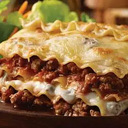

Lasagna

Description
This traditional, full-flavored lasagna is layered together in just
minutes with pasta sauce, noodles, and three cheeses.
Enjoy the taste of one of the classics of Italian cuisine.
Ingredients
- 1 (26 ounce) jar Prego® Traditional Italian Sauce
- 6 each uncooked lasagna noodles
- 1 (15 ounce) container ricotta cheese
- 2 cups shredded mozzarella cheese
- ¼ cup grated Parmesan cheese
Steps
- Spread about 1 cup pasta sauce in 2-quart shallow baking dish (11x7-inch).
- Top with 3 uncooked noodles, ricotta cheese, 1 cup mozzarella cheese, parmesan cheese and 1 cup pasta sauce.
- Top with remaining 3 uncooked noodles and remaining pasta sauce and cover it.
- Bake at 375 degrees F for 1 hour.
- Uncover and top with remaining mozzarella cheese.
- Let stand for 5 minutes.
- Enjoy!